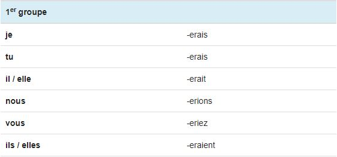
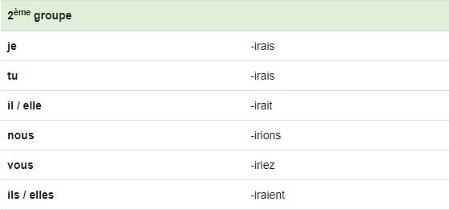
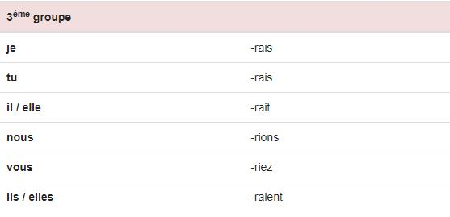
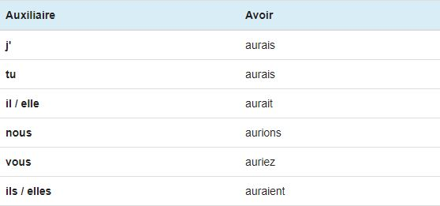
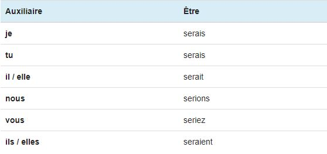

Le Conditionnel
Utilisation
Le conditionnel présent exprime un événement futur par rapport à un événement exprimé à un temps du passé dans le discours rapporté. Le conditionnel est un mode employé pour exprimer un événement ou un état soumis à une précondition (d'où son nom), pour rapporter des faits tout en exprimant un doute à leur sujet.
Le conditionnel présent est un temps simple (non composé), homophone du futur et il est généralement introduit dans une phrase avec un "si".
Terminaisons
Les terminaisons du conditionnel présent sont les mêmes pour tous les verbes de tous les groupes: -rais, -rais, -rait, -rions, -riez, -raient. Mais la dernière lettre avant la terminaison varie.
Voici donc, plus précisement, les terminaisons des 3 groupes de conjugaisons:
- Les verbes du 1er groupe rajoutent avant les terminaisons un -e 
- Les verbes du 2ème groupe rajoutent un -i 
- Les verbes du 3ème groupe ne rajoute rien 
Remarques
Comme au futur simple, les verbes des 1er et 2ème groupes conservent généralement l'infinitif en entier: "chanter => je chanterai", "finir => je finirai".
Les verbes du 3ème groupe conservent parfois leur radical mais beaucoup sont irréguliers: "vouloir => je voudrai", "tenir = je tiendrai".
En résumé, les irrégularités et les exceptions du futur au niveau des radicaux sont donc répercutées au conditionnel présent.
Auxiliaires
Voici la conjugaison des deux auxiliaires avoir et être au présent du conditionnel. Ces deux auxiliaires au présent permettent notamment de construire le conditionnel passé.
 
Premiers exercices
Exercices à faire au maximum sans l'aide de la leçon.
Conjugez le verbe attendu, à la personne attendue, au conditionnel. Ne pas écrire le pronom et ne pas mettre de majuscule !